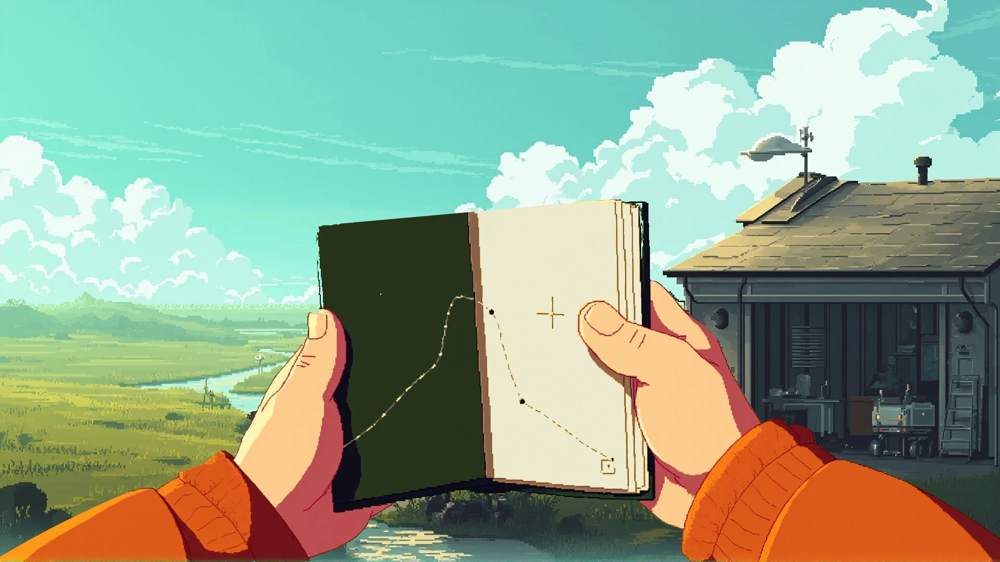
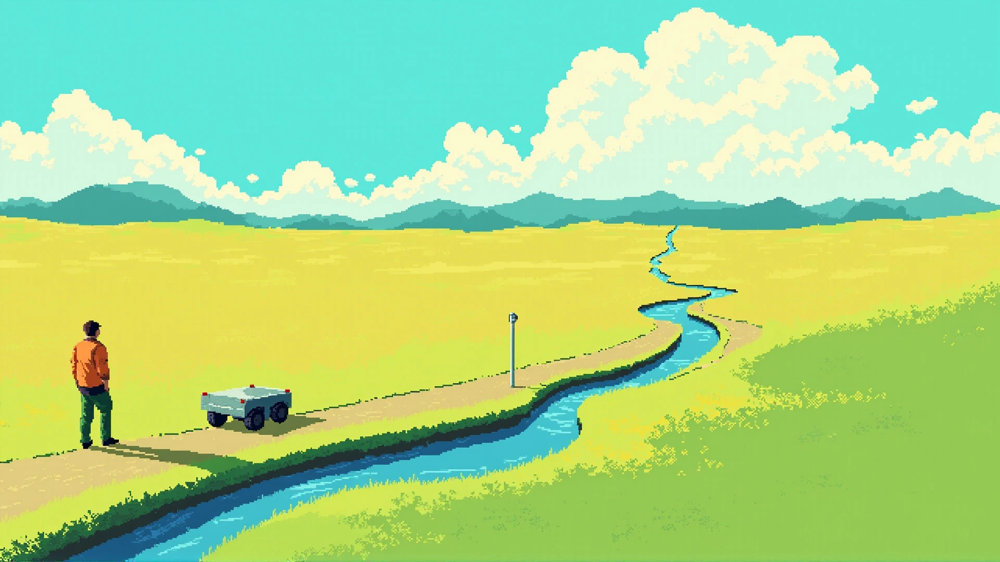

从剧情，落实到眼前的物件与场所。
手里的记录，
记录之外的远处。
两张关键画面候选：先检查手记是否成为可持有的物件，再检查视野打开后如何面对未知。它们用于美术评审，角色动作与连续空间仍待制作。
01 / 檐下 · 翻开封皮
让记录有重量，也有来处。
深绿软封皮、纸叠、持握和局部草图；现场仍留在视野中。此稿是手与簿的前景合成研究，尚未成为可翻页界面。

仍需修订
手与袖口比原画更概括、饱和，簿的打开角度偏竖，纸页可读面积有限。需要按真实短句与草图的阅读面积重做姿态；背景合成也不能宣称已站到新的檐下机位。
02 / 坡肩 · 视野展开
路仍向前，记录只到这里。
近处留下人、巡检载体与基准杆，水道和维护路继续通向远处。用尺度与尚未抵达的距离表达未知。

分镜要接住的事情
先沿路经过草坡遮挡，再在最后几步展开远景；停步后允许安静观看，主动翻手记才出现一句短注。
仍需修订
本稿草地偏黄、层次过平，人物仍大于脚本目标，载体轮廓与原画未完全对齐。缺少“刚越过草坡”的前景关系，不能以这张静帧宣称边界分镜完成。
对照 / 已认可的原画
保持同一个世界。
以下是实际风格与身份参照。近景的像素组织、袖口明暗、远处草地色带和设备造型，都须回到它逐项核对。

下一组制作
把中间的动作接起来。
先统一簿与袖口、修正坡肩前景和载体身份；再制作工位收簿、沿路离开、R1 端口采集、回站交接的关键姿态。镜头经过的地方和动作交付的资料要能接上。
本轮共调用 MMX image-01 四次，选两次结果作研究，视频调用为零。提示词、原始结果和离线处理记录均已保存。
回到七镜脚本排演 →